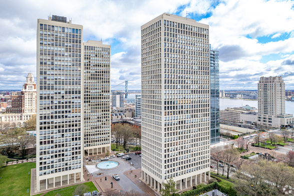
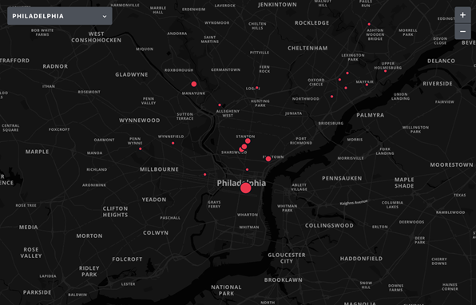
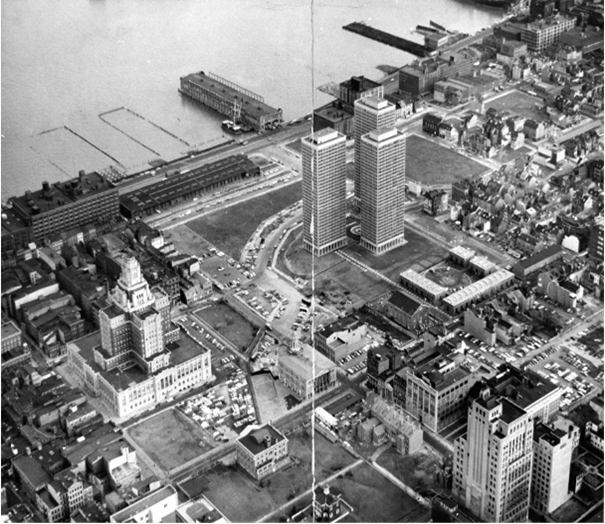

Chelsea Chen, Dec 8th,2024
Where does the data
come from?
The data for the Crime Report Map comes from multiple sources
to ensure comprehensive coverage. Public
safety agencies provide real-time information through police scanners, fire
department radio communications, and emergency services dispatch systems (911
calls). The app also utilizes official
government databases, including crime reports and statistics from local law
enforcement and city public safety departments. The app may integrate
historical crime data from sources like the FBI's Uniform Crime Reporting (UCR)
Program or local crime mapping resources. Additionally, news and media outlets contribute verified information from trusted
reporting on crime and public safety incidents. User-generated reports from community members offer real-time
context through incident reports, photos, and videos, adding immediacy to the
data, though these reports may not be immediately verified.
Many neighborhoods in Philadelphia still bear the legacy of
historical redlining, particularly in North
Philadelphia, West Philadelphia,
and the Lower Northeast, and many
highly risky neighborhoods marked on Citizen are the historical redlines. In
North Philadelphia, areas like Sharswood, Strawberry Mansion, and parts of
Allegheny West have faced decades of disinvestment, resulting in high poverty
rates and persistent crime. Similarly, West Philadelphia neighborhoods such as
Mantua, Mill Creek, and Belmont continue to struggle with underfunded schools,
a lack of affordable housing, and economic disparities. Meanwhile, the Lower
Northeast neighborhoods, including parts of Frankford and Kensington, still
contend with socioeconomic challenges like the opioid crisis and deteriorating
infrastructure.
Therefore，the crime rate is more a result of disinvestment than a
cause.
We divided investment into two segments. Governmental Investment refers to funding and resources provided by
federal, state, or local governments to improve infrastructure, public
services, and community development. Private
investment comes from individuals, businesses, developers, or
non-governmental organizations (NGOs) aimed at generating profit, improving
properties, or revitalizing communities.
Disinvestment, Crime,
and the Cycle of Decline
The cycle of disinvestment often begins with a lack of governmental funding, which
leads to deteriorating infrastructure, inadequate public services, and limited
economic opportunities. This decline, in turn, results in higher crime rates,
which discourage private investment, perpetuating a cycle of poverty and insecurity.
Belmont was historically redlined in the 1930s. Public funding for schools, infrastructure, and community services was consistently limited, resulting in dilapidated housing and failing public amenities. The lack of investment in social programs and job creation left residents, particularly Black families, with limited economic prospects.
The absence of opportunities and deteriorating living conditions contributed to higher crime rates in Belmont. Violent crime, theft, and drug-related offenses became more prevalent. Higher crime rates then deterred private investors who viewed Belmont as a risky area for real estate development or business ventures. This lack of investment meant fewer jobs, fewer services, and fewer opportunities for residents. With some targeted community revitalization efforts and non-profit interventions, the construction and safety in Belmont has been improved, but it’s still one of the most riskiest areas with 155 crimes during the past 3 months as reported in Citizen App.
Government
Investment, Crime Reduction, and the Boost of Private Investment
Strategic public investment can revitalize
neighborhoods, reduce crime, and attract private development, ultimately
transforming communities.
Society Hill was one of Philadelphia's
most prestigious and affluent neighborhoods. By the mid-20th century, Society
Hill had fallen into severe decline, suffering from neglect, deteriorating
housing, and rising crime rates. In the 1960s, the city initiated a large-scale
urban renewal project in restoring historic buildings, improving
infrastructure, and enhancing public safety. The neighborhood’s colonial-era
homes were preserved, and new infrastructure like paved streets, lighting, and
parks was developed. The influx of public investment led to improved safety
through better housing conditions, increased police presence, and community
services. As crime rates fell and the neighborhood's infrastructure improved,
private investors and wealthier residents began to move in. Historic homes were
purchased, renovated, and transformed into upscale residences. Such investment
attracted bunches of middle and upper-class professionals. This area’s
prosperity thus got improved. This trend is known as gentrification, characterized by rising property values, higher
rents, and the displacement of many original, lower-income residents. Society
hill is now ranked as mid risky with 92
crimes reported during the past 3 months in Citizen App.
Investments in housing infrastructure have been linked to improved safety outcomes. A study by the Perelman School of Medicine at the University of Pennsylvania (2021) revealed that city-funded structural repairs in low-income, historically segregated neighborhoods correlated with a 21.9% reduction in total crime on the affected blocks.

Therefore, the map serves not only as a tool for identifying safer neighborhoods and preventing crime but also as a strategic guide for urban development.
By pinpointing high-risk areas, the map can inform targeted investments in infrastructure, public services, and community programs. These investments can significantly improve safety, reduce crime rates, and ultimately attract further private investment, fostering a cycle of revitalization and sustainable growth.
Dacheng Wei, Dec 8th,2024
Urban crime in Philadelphia is linked to racial and economic
inequalities, rooted in historical policies like 1937 redlining, causing uneven
resource distribution and poverty. Using the Citizen app's real-time crime data
in Center City Philadelphia, we'll analyze how its algorithms reflect these
zoning issues, exploring power structures, social impacts, and data ethics.
Despite its economic vitality, Center City faces property crimes and minor
violence, mirroring other U.S. downtowns, while Philadelphia's overall violent
crime rates are rising.
Limitations of
the Crime Report Map
While Citizen is designed to inform the public about safety
by utilizing real-time crime data and police reports, seeks to deliver
immediate and precise information regarding criminal activities, the platform's
algorithm is not without its flaws, particularly in the realms of data
collection, processing, and analysis, which can result in inaccuracies and
misguidance. An examination of these limitations reveals several key areas of
concern.
One significant limitation stems from the use of historical data and the biases inherent in reporting. The Citizen software, for instance, may display a higher concentration of data for Center City due to its vibrant activity, rigorous law enforcement, and thorough crime reporting. This concentration can mislead users into believing that Center City is plagued by a more serious crime problem than other areas, thereby overshadowing the crime issues that may be prevalent in less affluent communities.
Moreover, the reliance on historical data for algorithm training and predictions can be problematic, as this data may not accurately reflect current crime trends influenced by socio-economic shifts and legal policy changes.
Another limitation is related to population density and commercial activity. While it is true that
areas like Center City, with its high population density, commercial vibrancy,
tourist traffic, and active nightlife, are more prone to crime, this does not
automatically equate to a higher crime rate compared to other regions. The
Citizen algorithm may place undue emphasis on these factors, leading to a
skewed assessment of crime rates. Furthermore, the algorithm may not fully
account for the complex array of factors that influence criminal behavior, such
as community culture, educational attainment, and employment status, resulting
in an incomplete evaluation of crime risks.
When compared to the data provided by the Philadelphia Police Department
, the limitations of the
Citizen algorithm become even more apparent. The police department's data,
being sourced from an official law enforcement agency, is likely to be more
comprehensive and accurate. Citizen, on the other hand, relies on real-time
data and police reports that can be subject to underreporting, misreporting, or
delays.These discrepancies in data
sources can lead to significant differences in crime rate assessments.
Additionally, the algorithm may not fully consider the uneven distribution of
law enforcement resources, which can result in an underestimation of crime in
impoverished communities. The subjective nature of data interpretation also
plays a role, as the Citizen algorithm may focus on real-time data
presentation, whereas the police department might prioritize long-term trends
and in-depth analysis of underlying causes.
Race and Economic Segregation
The incidence of crime is often closely intertwined with the economic, social, and cultural fabric of a region. In Philadelphia, although Center City experiences a relatively higher crime rate, it is still perceived as a comparatively safe haven when contrasted with other impoverished communities in the city. This disparity can largely be attributed to the influences of race and economic segregation.
The impact of historical investment on crime rates in Philadelphia is significant. Center City, as the economic hub of the city, has long been a magnet for substantial investment and resources. These investments have not only enhanced the community environment but also augmented employment opportunities and improved public services.
In contrast, impoverished
communities typically lack such investments, leading to dilapidated
infrastructure, scarce job prospects, and consequently, higher crime rates.
The improvements brought about by
historical investments are not immediate but manifest gradually over time. The
sustained development of Center City has led to significant advancements in
education, healthcare, and culture, attracting further resources and talent and
creating a virtuous cycle. Conversely, impoverished communities, suffering from
long-term investment neglect, remain trapped in a cycle of stagnation.
Urban revitalization and
gentrification have also played a crucial role in shaping crime rates in
Philadelphia. The initiatives in Center City from the 1960s to the 1980s, which
included enhancing community environments, increasing property values, and
introducing commercial facilities, attracted a return of the middle class and
professionals. This shift in social structure brought about increased social
surveillance and community cohesion, thereby reducing crime rates.
Gentrification not only altered the physical landscape of communities but also reshaped their social structures. The influx of the middle class and professionals introduced diverse lifestyles and values, with these new residents often prioritizing public safety and social order, actively participating in community governance, and further enhancing the sense of security in the community. The impact of deindustrialization and the rise of the service sector on crime rates cannot be overlooked. With the advent of deindustrialization and the rise of the service sector, Center City has become a hub for emerging service industries, offering a plethora of employment opportunities.
 Stable employment not only boosts residents' income
levels but also enhances social stability and personal security, thereby
contributing to a reduction in crime. The rapid growth of the service sector
has injected economic vitality, attracting more population and capital to
Center City. This surge in economic vitality has not only created more job
opportunities but also fostered prosperity in culture, education, and other
fields, further elevating the overall quality and sense of security in the
community.
The combined impact of race and economic segregation on crime rates is
profound. Racial inequality is largely rooted in economic segregation.
Impoverished communities often house a higher proportion of minority groups who
face employment discrimination, educational inequity, and a lack of economic
opportunities. These economic issues exacerbate social discontent and criminal
behavior.
Economic segregation leads to social isolation, with distinct boundaries between affluent and impoverished communities.
This social isolation not only restricts the development opportunities of residents in impoverished communities but also intensifies social tensions and conflicts, thereby influencing crime rates.
Power Structures and Social Influences in Crime Algorithms
The Citizen software algorithms, grounded in real-time crime data and police reports, offer a vivid snapshot of the current urban crime landscape. Beyond this, they revealed the intricate tapestry of power structures and social influences that shape this landscape. These influences are deeply rooted, spanning various dimensions such as resource allocation, racial and economic segregation, and the dynamics of power and responsibility.
The ramifications of unequal resource allocation are profound
and far-reaching. Historical racial discrimination policies, like redlining and
housing segregation, have cast long shadows, resulting in persistent
inequalities in resource distribution. Communities, particularly
African-American and Latino, have been ensnared in a cycle of poverty, deprived
of essential resources in education, healthcare, and employment. This chronic
scarcity has fueled social discontent and exacerbated crime issues. The Citizen
software algorithms, in their depiction of crime distribution, inadvertently
mirror the disparities born out of this unequal resource allocation.
The interplay of power and responsibility in social contexts
is equally significant. The government, as the custodian of social management
and public services, is tasked with rectifying historical wrongs, bridging the
wealth gap, and uplifting the living conditions in marginalized communities.
However, the intricate web of power structures and the machinations of interest
groups pose formidable challenges to the government's efforts. Meanwhile,
corporations, especially technology firms like Citizen software, must shoulder
their share of social responsibility. They are obligated to ensure the fairness
of their algorithms, lest they become instruments of social injustice and
discrimination.
Addressing crime issues
necessitates a fundamental reconfiguration of power structures, amplifying the
voices of impoverished communities, and ensuring equitable resource allocation.
This ambitious endeavor requires a concerted effort from the
government, corporations, and every stratum of society.
Recommendation
1. Algorithmic Governance Enhancement
Transparency and Accountability: Implement transparent algorithms
that can be audited by independent bodies to ensure fairness and
accountability. Regularly publish reports on algorithmic decision-making
processes.
Bias Mitigation: Employ advanced machine learning techniques to
continuously detect and mitigate biases related to race, ethnicity, and
economic status, ensuring equitable crime reporting.
Stakeholder Engagement: Involve a diverse group of
stakeholders, including community leaders, ethicists, and data scientists, in
the algorithm development and review process to ensure a broad perspective.
2. Data Ethics and Privacy
Data Minimization: Collect only the data that is strictly necessary for
crime reporting to protect individual privacy. Implement strict data retention
policies.
Anonymization Techniques: Use advanced anonymization techniques
to ensure that personal data is not identifiable, thereby protecting the
privacy of individuals mentioned in crime reports.
Ethical Data Use Framework: Develop a comprehensive framework
that outlines the ethical use of data, including guidelines on data sharing,
consent, and the right to be forgotten.
3. Economic and Social Equity
Affordable Access: Ensure that the Citizen app is accessible to all
economic groups by offering a free version or subsidies for low-income users.
Community Feedback Mechanism: Establish a feedback system that
allows communities to report inaccuracies or concerns, ensuring that the app
reflects the realities of all economic and social groups.
Economic Impact Studies: Conduct regular studies to assess the
economic impact of the app on different neighborhoods, ensuring that it does
not disproportionately affect lower-income areas.
4. Racial and Ethnic Sensitivity
Cultural Competence Training: Provide training for developers and
data analysts on cultural competence to ensure that the app is sensitive to the
diverse needs of different racial and ethnic groups.
Diverse Data Sources: Incorporate data from a wide range of
sources to ensure that the crime reporting is not skewed towards certain racial
or ethnic groups.
Community Partnerships: Form partnerships with racial and
ethnic community organizations to gain insights and ensure that the app serves
the needs of all communities without bias.
5. Regional and Demographic Customization
Localized Algorithms: Develop localized algorithms that
take into account the specific socio-economic and demographic characteristics
of different regions to ensure accurate and relevant crime reporting.
Demographic Impact Assessments: Regularly conduct assessments to
understand the impact of the app on different demographic groups, making
adjustments as necessary to ensure fairness.
Regional Governance Boards: Establish regional governance boards
comprising local representatives to oversee the app's performance and ensure it
meets the specific needs of each area.
6. Integration with Other Systems
Smart City Initiatives: The data can be integrated with other
smart city technologies, such as surveillance systems, traffic management, and
emergency response networks, to create a holistic safety governance system.
Public Health Integration: Collaborate with public health
systems to use crime data in understanding and addressing social determinants
of health, particularly in marginalized communities.
Educational Partnerships: Partner with educational institutions
to use the data for research and to develop community-driven solutions to crime
and safety issues.
References
Lower Merion Historical Society. (n.d.). Belmont Hills. Retrieved from
https://lowermerionhistory.org/home/full-text/contents/belmont-hills/
Penn Medicine. (2021, July 21). City-funded housing repairs in low-income
neighborhoods associated with drop in crime. Retrieved from https://www.pennmedicine.org/news/news-releases/2021/july/city-funded-housing-repairs-in-low-income-neighborhoods-associated-with-drop-in-crime
Aaronson, D., Hartley, D. A., & Mazumder, B. (2021). HOLC maps: How race and
poverty influenced real estate professionals' evaluation of lending risk in the 1930s. The Journal of Economic History, 81(1), 255–291. https://doi.org/10.1017/S0022050721000095
CITIZEN. (2024). Keeping you safe & informed. Citizen. https://citizen.com/explore
Ding, L., Hwang, J., & Divringi, E. (2016). Gentrification and residential mobility in
Philadelphia. Regional Science and Urban Economics, 61, 38–51. https://www.doi.org/10.1016/j.regsciurbeco.2016.09.004
Jacoby, S. F., Dong, B., Beard, J. H., Wiebe, D. J., & Morrison, C. N. (2018). The
enduring impact of historical and structural racism on urban violence in Philadelphia. Social Science & Medicine, 199, 87–95. https://www.doi.org/10.1016/j.socscimed.2017.05.038
Mitre-Becerril, D., & MacDonald, J. M. (2024). Does urban development influence
crime? Evidence from Philadelphia’s new zoning regulations. Journal of Urban Economics, 142, 103667. https://www.doi.org/10.1016/j.jue.2024.103667
Philadelphia Police Department (2024). Crime Maps & Stats. Latest Crime Stats Report.
https://www.phillypolice.com/crimestats
This site was created with the Nicepage